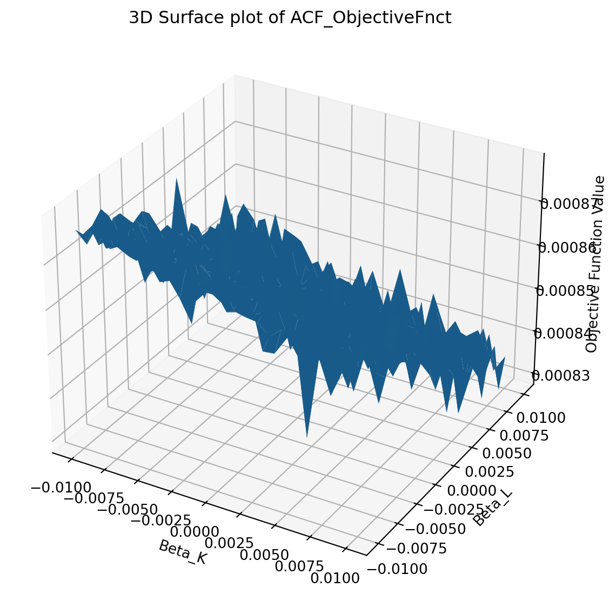

This TA session will review Production in the context of PSET 3. We will cover…
General PSET tips
ACF Theory Review
ACF Implementation
GNR Theory+Implementation
General PSET Tips
Break problem and code (at least initially) into pieces; make sure those pieces work well before proceeding
Read paper and appendices. Appendices often contain most practical implementation information (as we’ll see)
Write pseudo-code/work out algebra yourself; easy to read and follow others work, but need to do it yourself (I think)
Commit to one notation and stick with it (this made me very confused when I was doing my PSET, and wasted my time)
ACF Theory
LP Assumptions
As in OP, the “problem” solved by the LP method is (partial) firm knowledge of \(\omega_{it}\) creates endogeneity, ruining direct OLS estimates of \(\beta_{k,l,m}\) . Impose assumptions that allow for alternative method to produce consistent estimation with endogenous input choice…
\(I_t = \{\omega_{i\tau}\}_0^t\), not future shocks. \(E[\epsilon_{it}| I_t] = 0\).
Capital is chosen in period \(t-1\); labor is chosen in period \(t\). Capital is dynamic, labor is not
Intermediate inputs are chosen at time \(t\) like labor; \(m_{it} = f_t (\omega_{it}, k_{it})\)
\(f_t\) is stricly increasing in \(\omega\) and \(k\).
LP Estimation (theory)
Step 1: Estimate \[
y_{it} = \Phi_t(k_{it}, m_{it}) + \beta_l l_{it} + \epsilon_{it}
\] *i.e. regress output on polynomial of capital and intermediate inputs, and labor, recover \(\Phi_t\) and \(\beta_l\)
Step 2: Construct moment conditions with \[
E[\xi_{it} + \epsilon_{it}|I_{i,t-1}] = 0
\] and solve for \(\beta_0, \beta_k, \beta_l\).
TIP: Review Petrin, Poi, and Levinsohn 2004 in Stata Journal
Functional Dependence
DGP for \(l_{it}\) not really discussed in LP; is that a problem? Yes. Take FOC of CD production wrt \(m_{it}\)…
\[\begin{aligned}
\beta_m K^{\beta_k} L_{it}^{\beta_l} M_{it}^{\beta_m - 1} e^{\omega_{it}} = p_m \\
y_{it} = \ln \left( \frac{1}{\beta_m} \right) + \ln \left( \frac{p_m}{p_y} \right) + m_{it} + \epsilon_{it}
\end{aligned}\]
What do you notice? No \(\beta_l\)! Moment condition based on \(\epsilon\) alone (equivalent of first stage regression) can’t deliver \(\beta_l\)!
Generalizing; suppose \(l_{it} = h_t (\omega_{it}, k_{it})\); that is, labor is just like intermediate inputs. Then returning to our first step… \[
y_{it} = \Phi_t(k_{it}, m_{it}) + \beta_l l_{it} + \epsilon_{it}
\] … we can’t separate \(\Phi\) from \(\beta_l\)!
ACF Assumptions
Instead assume…
\(l_{it}\) can be dynamic! Picked at \(t, t-1, t-b...\)
\(m_{it} = f_t(\omega_{it}, k_{it}, l_{it})\)
\(f_t\) is strictly increasing in \(\omega\)
Now we can estimate the value-added production function\[
y_{it} = \beta_0 + \beta_k k_{it} + \beta_l l_{it} + \epsilon_{it}
\]
Assumption 4 is key difference. Recovering intermediate input choice conditional on labor choice (labor chosen before or simultaneously with intermediate inputs).
And use them to estimate parameters (\(\rho, \beta_0, \beta_k, \beta_l\)) Note: There is more direct way of GMM estimating just \(\beta_k, \beta_l\), as we’ll discuss
ACF Implementation
ACF Step 1
First, create a function that takes data and returns \(\Phi_t\); in practice these are predicted values! Standard thing to do is estimate 3rd order polynomial of variables.
import numpy as npimport pandas as pdimport jax.numpy as jnpimport jaxopt as jaxoptfrom PSET3_functions.misc import poly_2v, poly_3v, jnp_reg_predict, gen_datafrom PSET3_functions.acf_est import ACF_FirstStage# def ACF_FirstStage(dat):# # generate polynomial terms, up to desired order# # OLS estimate; predicted values are Phi! # # return data set with Phi valuesq2_data = pd.read_stata("data/PS3_data.dta")industry13_unbalanced = q2_data[q2_data["X16"] ==1].copy()main_data = gen_data(industry13_unbalanced)acfdat = main_data[main_data["m"] !=0].copy() #dropping observations with no materials dataacf_est = ACF_FirstStage(acfdat)print(acf_est.head())
For Step 2, we simplify our life by reading Appendix A-4 of ACF (or levpet Stata Journal; both use same trick). We can “concentrate” out \(\rho, \beta_0\) by observing…
\[\begin{aligned}
\beta_0 + \omega_{it}(\beta_k,\beta_l) = \Phi_t (k_{it}, l_{it}, m_{it}) - \beta_k k_{it} - \beta_l l_{it} \\
\beta_0 + \omega_{it}(\beta_k, \beta_l) = \beta_0 + (f(\omega_{i,t-1}) + \xi_{it})
\end{aligned}\]
That is, we can recover \(\omega_{it}\) up to a constant with only guesses on \(\beta_k, \beta_l\), and we can use that estimate to recover \(\xi_{it}\) (if we assume AR1, as we do, regressing our estimate of \(\beta_0 + \omega\) on its lag gives us \(\xi\) as the residual). Now we can use moments \(E[\xi_{it} | I_{i,t-1}] = 0\); much easier to optimize, this is only a 2-dimensional problem!
ACF Step 2
import numpy as npimport matplotlib.pyplot as pltimport pandas as pdimport jaximport jax.numpy as jnpimport jaxopt as jaxoptfrom PSET3_functions.misc import poly_2v, poly_3v, jnp_reg_predict, gen_datafrom PSET3_functions.acf_est import ACF_ObjectiveFnct# def ACF_ObjectiveFnct(dat):# # run first stage# # construct 2 moments built of E[xi|I] = 0# # following ACF A-4, using k_t, l_t-1# # return objective function (identity weighting) q2_data = pd.read_stata("data/PS3_data.dta")industry13_unbalanced = q2_data[q2_data["X16"] ==1].copy()main_data = gen_data(industry13_unbalanced)acfdat = main_data[main_data["m"] !=0].copy() #dropping observations with no materials data# Get objective fnct values for a grid around (0,0)x = np.linspace(-.01, .01, 25)y = np.linspace(-.01, .01, 25)X, Y = np.meshgrid(x, y)Z = np.zeros_like(X)for i inrange(X.shape[0]):for j inrange(X.shape[1]): Z[i, j] = ACF_ObjectiveFnct([X[i, j], Y[i, j]], acfdat)# Plot the objective functionfig = plt.figure(figsize=(10, 7))ax = fig.add_subplot(111, projection='3d')ax.plot_surface(X, Y, Z)ax.set_title('3D Surface plot of ACF_ObjectiveFnct')ax.set_xlabel('Beta_K')ax.set_ylabel('Beta_L')ax.set_zlabel('Objective Function Value')plt.show()
ACF Step 2

ACF Step 2
Plotted the objective function in a grid around (0,0) to illustrate that it isn’t smooth! Which is why your numerical gradient won’t work!
Luckily, I wrote all my functions in JAX (can’t rely on packages!), so I can easily recover the precise gradient using autograd.
import jaxfrom PSET3_functions.acf_est import ACF_ObjectiveFnctq2_data = pd.read_stata("data/PS3_data.dta")industry13_unbalanced = q2_data[q2_data["X16"] ==1].copy()main_data = gen_data(industry13_unbalanced)acfdat = main_data[main_data["m"] !=0].copy() #dropping observations with no materials data# use jax to get gradientdef compute_gradient(params, data): grad_fn = jax.grad(ACF_ObjectiveFnct, argnums=0)return grad_fn(params, data)compute_gradient([0.0, 0.0], acfdat)
Now that we have the gradient, we can solve for the optimal \(\beta_k, \beta_l\) using standard optimization routines (BFGS, since low-dimensional). Moreover, since the space is small (because we concentrated out two parameters), we can “check” our solution by using a grid search method as well (i.e. Nelder-Mead).
from PSET3_functions.acf_est import ACF_estimationfrom PSET3_functions.misc import gen_dataimport pandas as pdimport osimport sysfrom contextlib import redirect_stdoutq2_data = pd.read_stata("data/PS3_data.dta")industry13_unbalanced = q2_data[q2_data["X16"] ==1].copy()main_data = gen_data(industry13_unbalanced)acfdat = main_data[main_data["m"] !=0].copy() # Dropping observations with no materials data# Suppress printed output of ACF_estimationwithopen(os.devnull, 'w') as f, redirect_stdout(f): beta_k, beta_l, beta_k_search, beta_l_search = ACF_estimation(acfdat)print("BFGS vs Nelder-Mead Diff", abs(beta_k - beta_k_search), abs(beta_l - beta_l_search))
BFGS vs Nelder-Mead Diff 0.006991541362366183 0.011449799261762816
ACF Summary
Pseudo-code is as follows…
Estimate \(\Phi_t\) using polynomial regression
Recover \(\xi\) by “concentrating out” regression described above
Construct moment conditions \(E[\xi_{it} | I_{i,t-1}] = 0\) and solve for \(\beta_k, \beta_l\)
Remember to…
Always read appendices!
Not rely on numerical gradients! Autograd or directly calculate analytically. Simplified problem lets you use grid-search as a check.
GNR: Theory&Implementation
GNR Theory
Not going to go into all the algebra here, since it’s in the paper, slides, and first part of the PSET. But in broad terms…
Expenditure share on intermediate inputs provides identification of the E.S. wrt intermediate inputs (see Theorem 2) \[
s_{jt} = \ln \mathscr{E} + \ln(\partial/\partial m_{jt} f(k_{jt}, l_{jt}, m_{jt})) - \epsilon_{jt}
\]
Integrating the E.S. gives us the production function up to an integration constant. We use the standard proxy variable approach to recover this constant (see Theorem 3).
For a polynomial \(h(k_{jt},l_{jt},m_{jt})\) (second order is fine!) estimate coefficients \(\gamma\) by minimizing the sum of squared errors of \(s_{jt} - \ln h(k_{jt},l_{jt},m_{jt})\).
Recover FOC constant \(\hat{\mathscr{E}}\) as mean of \(\exp(\epsilon_{jt})\), mean of exponentiated residual.
Recover \(\hat{\gamma}\) as coefficients over \(\hat{\mathscr{E}}\), delivering \(\partial f(k_{jt},l_{jt},m_{jt})/\partial m\).
GNR Implementation
Step 2: Identify integration constant
Analytically integrate \(\partial f(k_{jt},l_{jt},m_{jt})/\partial m\) to get \(f(k_{jt},l_{jt},m_{jt})\) up to integration constant \(C(k_{jt},l_{jt})\). Define integral as \(\mathscr{D}_t\).
Define \(C(k_{jt},l_{jt})\) as a polynomial approximation \(C_\alpha\). The parameters of this polynomial are what we are solving for!
Assuming \(\omega\) is AR1, we can concentrate out as in ACF: for given \(C_\alpha\), define \(\omega_{jt}\) as \(\mathscr{Y}_{jt} + C_\alpha(k_{jt},l_{jt})\). Recover \(E[\omega_{jt} | \omega_{jt-1}]\) (i.e. third order polynomial), and use that to recover \(\xi_{jt}\). Use moments built off \(E[\xi_{jt} | I_{j,t-1}] = 0\) to recover \(C_\alpha\); in practice, use all the terms in your polynomial estimating \(C_\alpha\).
GNR Implementation
import pandas as pdfrom PSET3_functions.gnr_est import GNR_estimationimport osimport sysfrom contextlib import redirect_stdoutfrom tabulate import tabulateq2_data = pd.read_stata("data/PS3_data.dta")industry13_unbalanced = q2_data[q2_data["X16"] ==1].copy()main_data = gen_data(industry13_unbalanced)gnrdat = main_data[main_data["m"] !=0].copy() #dropping observations with no materials data# Suppress printed output of GNR_estimation# with open(os.devnull, 'w') as f, redirect_stdout(f):# dm, omega = GNR_estimation(gnrdat)dm, omega =1.66219, 11.3425# hard coding bc this takes so longresults = [["E[df/dm]", dm], ["E[omega]", omega]]headers = ["estimates"]print(tabulate(results, headers, tablefmt="plain"))
estimates
E[df/dm] 1.66219
E[omega] 11.3425
GNR Summary
Pseudo-code is…
Estimate as polynomial \(\partial f(k_{jt},l_{jt},m_{jt})/\partial m\) using FOC and some algebraic manipulation
Integrate analytically to get \(f(k_{jt},l_{jt},m_{jt})\) up to an integration constant. Estimate integration constant as polynomial, with parameters determined by GMM moments built off of \(E[\xi_{jt} | I_{j,t-1}] = 0\).
GNR Summary
Tips…
In first step, follow algebra closely. Remember there are 2 layers of logs here (logging production function, and logging FOC to make additive).
In second step, remember to integrate analytically.
In second step, remember when constructing moments that labor is assumed predetermined in GNR.
Read paper, especially Section IV and Section V, very closely. Make sure you understand each step as you code it. Can waste a lot of time not doing that (I did).
This one is really hard! But also really interesting! Give it your best shot (I think GNR is the most interesting part of the PSET, and underutilized in literature).